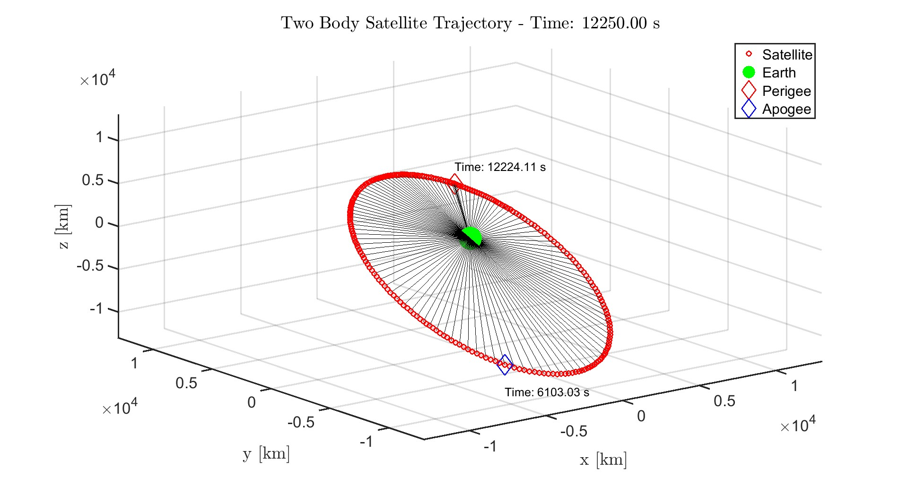
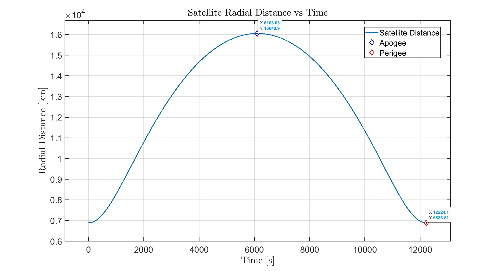

Tyler Jones
University of Wisconsin-Madison
At a given instant \(t_0 \) , a 1000-kg earth-orbiting satellite has the inertial position and velocity vectors \(\mathbf{r_0} \) = 3207 \(\mathbf{\hat{x}} \)+ 5459 \(\mathbf{\hat{y}} \)+ 2714 \(\mathbf{\hat{z}} \) (km) and \(\mathbf{v_0} \) = −6.532 \(\mathbf{\hat{x}} \)+ 0.7835 \(\mathbf{\hat{y}} \)+ 6.142 \(\mathbf{\hat{z}} \) (km/s). Numerically solve the two-body second-order differential equation to find the maximum altitude reached by the satellite and the time at which it occurs. Please also include a plot of the position of the satellite as a function of time.
 